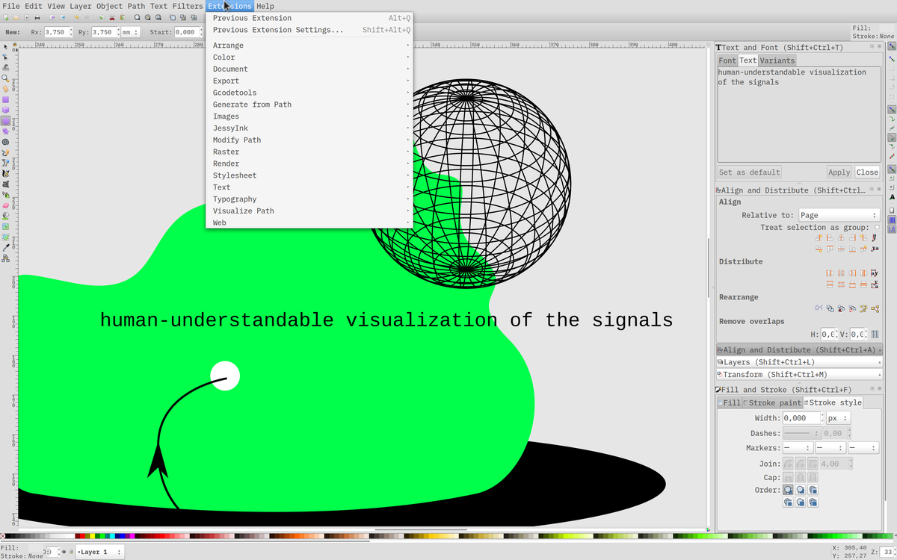
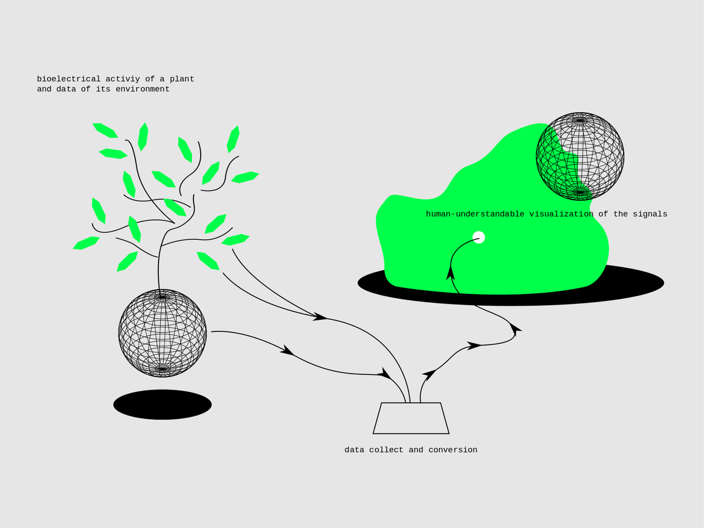

Computer-aided design
A tour of open-source softwares for computer-aided design, in order to discover and learn some of the tools that I'll use to design my future projects.
GIMP
GIMP is a raster graphics editor used for image retouching and editing, converting between different image formats, free-form drawing, … Installation: $ sudo apt-get install gimp

Even if I only used GIMP to draw a quick moodboard for my project, I directly had a good feeling with it, the software seems robust and well designed. There's a huge online community behind it, which makes finding tips and tricks super easy.

Shortcuts
- Move:
m - Scale:
shift + t - Crop and resize:
shift + c - Rotate:
shift + r
And many more with a "GIMP shortcuts" research in DuckDuckGo.
Inkscape
Inkscape is a vector graphics editor. Its primary vector graphics format is SVG (Scalable Vector Graphics). Installation: $ sudo apt-get install inkscape

I didn't really like spending time in Inkscape. I had a few bugs, the software crashed several times, the handling of the vectors was not precise. Surely I have to spend more time on it, maybe to tweak it a bit, because the community behind the software seems to agree that it has a great potential. Next time, I'll go for some Python script experimentation, an area where Inkscape seems very interesting.
In the meantime, I have drawn a basic but vector schema of my project.

Shortcuts
- Select:
s; Node:n - Zoom tool:
z; Zoom in:+; Zoom out:- - Transform:
ctrl + shift + M - Ellipse/arc tool:
e - Rectangle tool:
r - Convert selected object(s) to path:
shift + ctrl + C - Bezier tool:
b - Calligraphy tool:
c - Color picker:
d
And many more with a "Inkscape shortcuts" research in DuckDuckGo.
Blender
Blender is 3D computer graphics software used for creating animated films, visual effects, 3D printed models, motion graphics, …
Installation: $ sudo snap install blender --classic
FreeCAD
Freecad is general-purpose parametric 3D CAD modeler software made to design real-life objects of any size. It is highly customizable and extensible and it can read and write to many open file formats.
Installation: $ sudo apt-get install freecad
OpenSCAD
OpenSCAD is a software for creating solid 3D CAD (computer-aided design) objects. It is a script-only based modeller that uses its own description language; parts can be previewed, but it cannot be interactively selected or modified by mouse in the 3D view. An OpenSCAD script specifies geometric primitives (such as spheres, boxes, cylinders, etc.) and defines how they are modified and combined (for instance by intersection, difference, envelope combination and Minkowski sums) to render a 3D model.
Installation: $ sudo apt-get install openscad